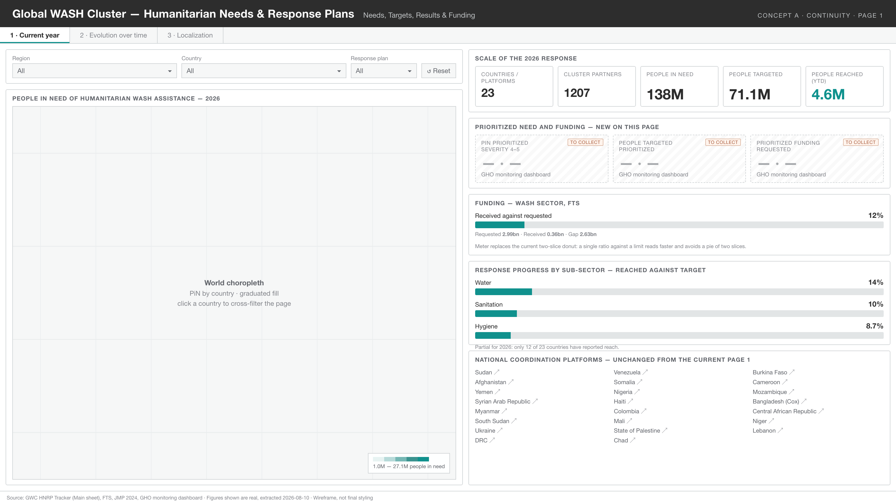
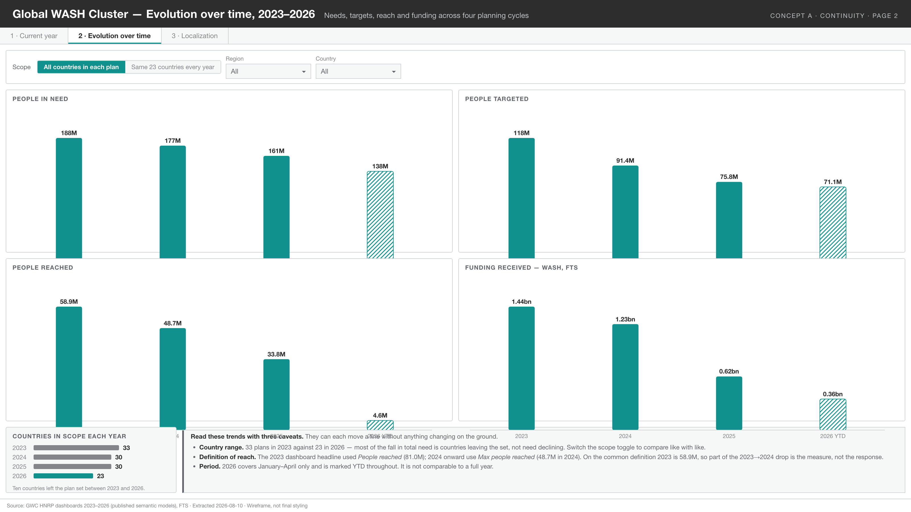
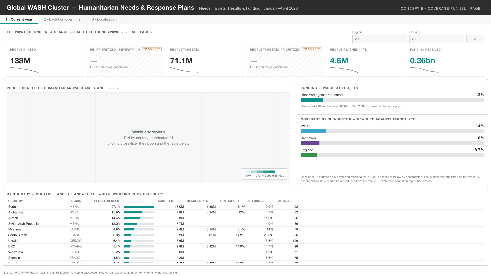
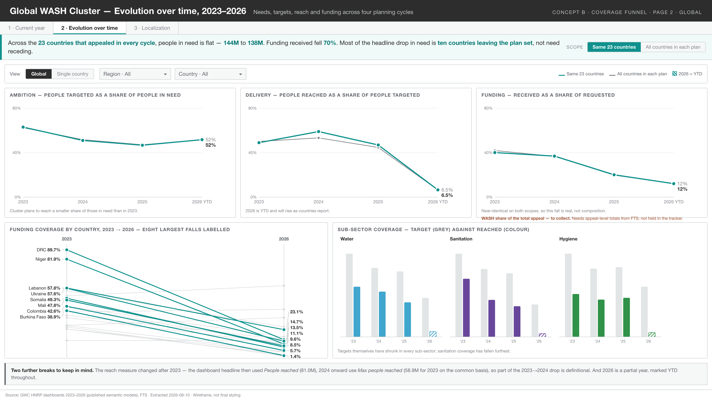
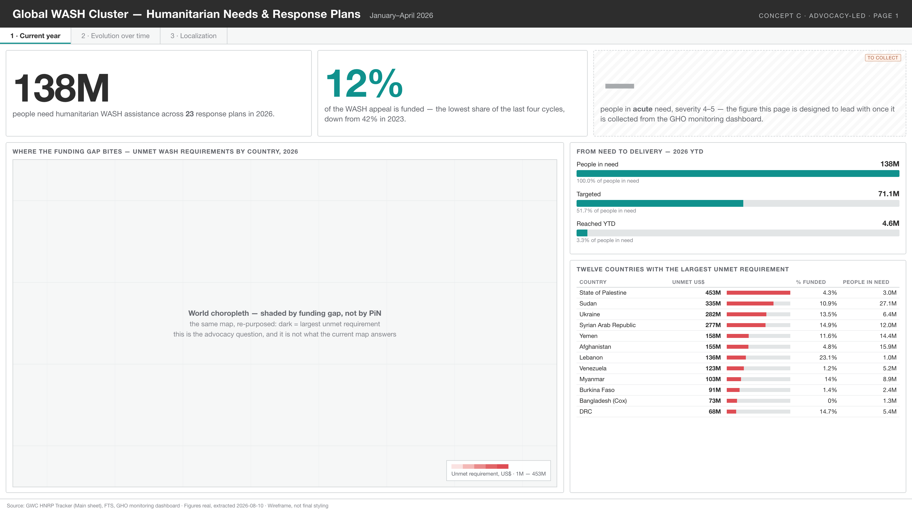
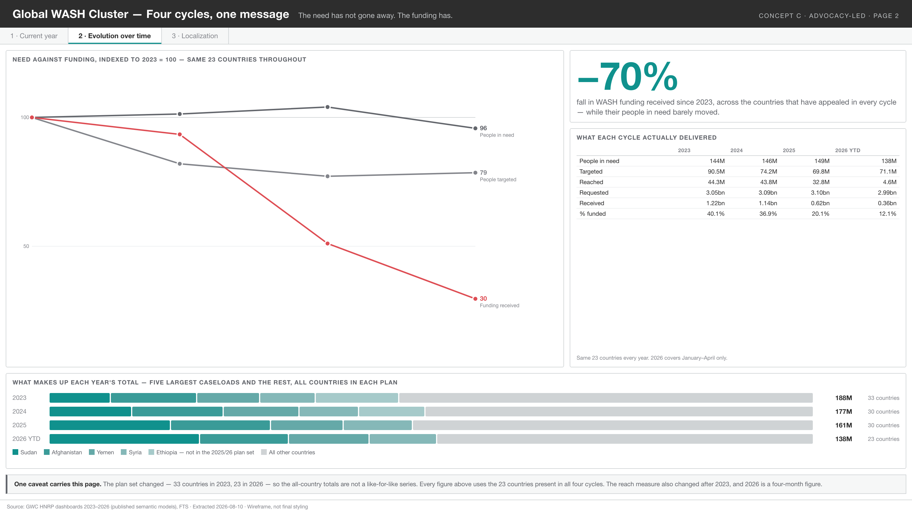

A · Page 1Continuitytoday's layout, decongested, plus a prioritized block

A · Page 2Continuityfour trend columns, caveat band

B · Page 1Coverage funnelKPI ribbon with sparklines, map, analytic country table

B · Page 2Coverage funnelthree ratios, country slope chart, sub-sector facets

C · Page 1Advocacy-ledhero figures, map shaded by funding gap

C · Page 2Advocacy-ledone indexed chart, composition of each year's total
